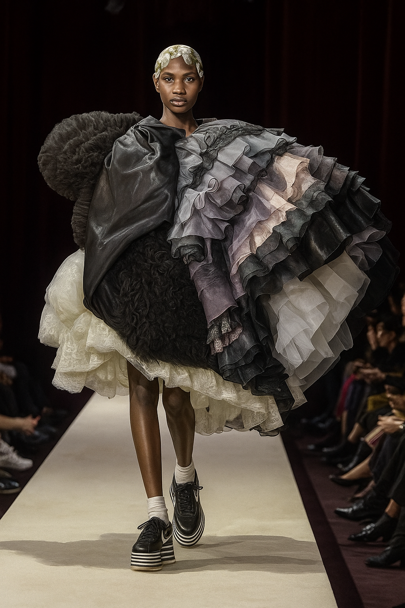
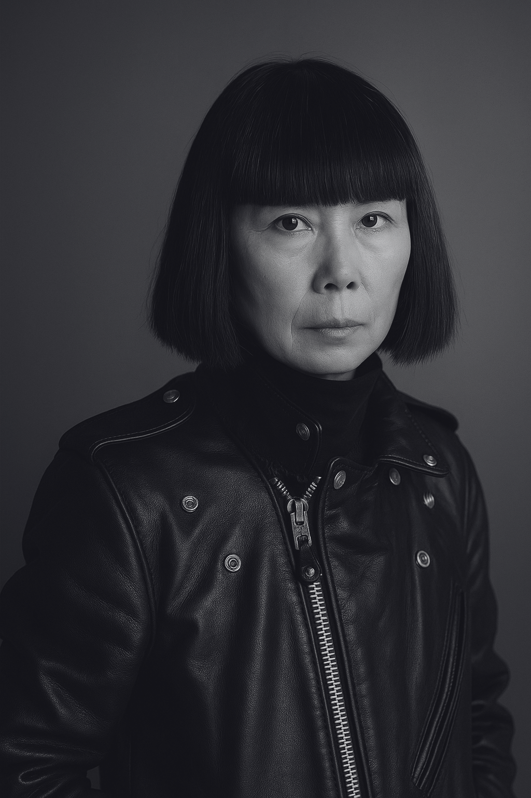

Comme des garçons inaugura sua primeira loja no Brasil
A icônica marca japonesa, fundada por Rei Kawakubo, abrirá sua primeira loja na América do Sul em junho de 2025 no Shopping Iguatemi São Paulo

No dia 13 de junho de 2025, a Comme des Garçons — um dos nomes mais emblemáticos da moda conceitual — abriu as portas de sua primeira loja no Brasil, no coração da capital paulista. O endereço escolhido não poderia ser mais emblemático: o Shopping Iguatemi São Paulo, um dos centros de luxo mais tradicionais e influentes da cidade. Localizada no piso superior, a loja ocupa cerca de 160 metros quadrados e foi totalmente projetada sob a supervisão da própria equipe japonesa da Comme, respeitando o universo estético radical e minimalista que caracteriza a marca.
A inauguração, que aconteceu durante a manhã e se estendeu ao longo do dia, foi marcada por uma movimentação intensa de nomes importantes da moda nacional, stylists, designers, jornalistas, colecionadores e fãs da grife, que puderam explorar em primeira mão a experiência sensorial que a loja oferece. Em paralelo à abertura, uma instalação artística assinada pela própria Rei Kawakubo foi montada no mesmo andar, criando um ambiente imersivo e quase museológico. A instalação ficará em exibição até 1º de julho, convidando o público a mergulhar no universo filosófico e visual da marca.
A loja brasileira traz uma curadoria precisa de produtos das linhas Comme des Garçons principal, Comme des Garçons Shirt, a desejada linha mais lúdica e casual CDG PLAY, além da icônica Comme des Garçons Parfums, conhecida por suas fragrâncias experimentais e sem gênero. Há também itens de colaborações exclusivas e lançamentos da temporada Primavera/Verão 2025, tornando a loja não apenas um ponto de venda, mas um verdadeiro ponto de contato com a estética e o pensamento de Kawakubo.

Fundada em 1969, em Tóquio, a Comme des Garçons é sinônimo de ruptura e experimentação. Desde seus primeiros passos, a marca rompeu com qualquer noção tradicional de beleza, gênero, forma ou utilidade. Seu nome — que em francês significa “como os meninos” — já sugeria uma crítica ao binarismo estético da moda e às limitações do vestuário convencional.
O impacto da marca se consolidou em 1981, quando Kawakubo apresentou sua primeira coleção em Paris. A imprensa, atônita, descreveu a passarela como um desfile de “mendigos chiques” ou “buracos negros da moda”. As roupas eram propositalmente desconstruídas, com tecidos rasgados, volumes estranhos e ausência total de cores vivas. Para muitos, aquilo não era “belo” — e exatamente por isso, transformou o curso da moda para sempre.
Ao longo das décadas, a Comme des Garçons se expandiu, criando subdivisões como Homme Plus (moda masculina com apelo experimental), Comme des Garçons Shirt, Noir Kei Ninomiya, além de colaborações históricas com marcas como Nike, Supreme, Converse, Levi’s, Salomon e até com designers como Junya Watanabe e Jean Paul Gaultier.

Nascida em Tóquio, em 1942, Rei Kawakubo é uma das estilistas mais influentes — e mais misteriosas — da história da moda contemporânea. Formada em História da Arte pela Keio University, sua entrada no universo fashion não veio por vias convencionais. Começou como stylist, mas logo se viu insatisfeita com os limites impostos pelas roupas disponíveis no mercado. Decidiu, então, criar as suas próprias — e com isso, fundou em 1969 o que viria a ser a Comme des Garçons.
Ao contrário da maioria dos grandes nomes da moda, Kawakubo evita holofotes. Raramente dá entrevistas, quase nunca aparece em público e raramente sobe nas passarelas ao final de seus desfiles. Isso porque seu foco está exclusivamente na criação. Para ela, moda é uma forma de arte conceitual, que deve buscar o que ainda não foi feito.
Kawakubo revolucionou o uso do preto, tornou o “erro” uma linguagem estética, desafiou conceitos de gênero décadas antes de isso se tornar pauta mainstream e fez do desfile um espaço de performance e narrativa visual. Em 2017, ela se tornou apenas a segunda designer viva a ser homenageada com uma exposição solo no Metropolitan Museum of Art, em Nova York — a icônica mostra “Rei Kawakubo/Comme des Garçons: Art of the In-Between”.